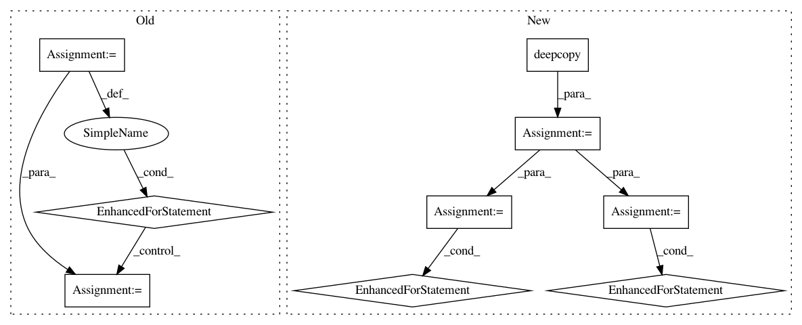

5b48f9a9c097d26d395873044ceaa1a0b886682a,solutionbox/code_free_ml/mltoolbox/code_free_ml/analyze.py,,run_local_analysis,#Any#Any#Any#Any#,291
Before Change
parsed_line = dict(zip(header, line))
num_examples += 1
for col_schema in schema:
col_name = col_schema["name"]
col_type = col_schema["type"].lower()
transform = features[col_name]["transform"]
// Map the target transfrom into one_hot or identity.
if transform == constant.TARGET_TRANSFORM:
if col_type == constant.STRING_SCHEMA:
transform = constant.ONE_HOT_TRANSFORM
elif col_type in constant.NUMERIC_SCHEMA:
transform = constant.IDENTITY_TRANSFORM
else:
raise ValueError("Unknown schema type")
if transform in constant.TEXT_TRANSFORMS:
split_strings = parsed_line[col_name].split(" ")
// If a label is in the row N times, increase it"s vocab count by 1.
// This is needed for TFIDF, but it"s also an interesting stat.
for one_label in set(split_strings):
// Filter out empty strings
if one_label:
vocabs[col_name][one_label] += 1
elif transform in constant.CATEGORICAL_TRANSFORMS:
if parsed_line[col_name]:
vocabs[col_name][parsed_line[col_name]] += 1
elif transform in constant.NUMERIC_TRANSFORMS:
if not parsed_line[col_name].strip():
continue
numerical_results[col_name]["min"] = (
min(numerical_results[col_name]["min"],
float(parsed_line[col_name])))
numerical_results[col_name]["max"] = (
max(numerical_results[col_name]["max"],
float(parsed_line[col_name])))
numerical_results[col_name]["count"] += 1
numerical_results[col_name]["sum"] += float(parsed_line[col_name])
elif transform == constant.IMAGE_TRANSFORM:
pass
elif transform == constant.KEY_TRANSFORM:
pass
else:
raise ValueError("Unknown transform %s" % transform)
// Write the vocab files. Each label is on its own line.
vocab_sizes = {}
for name, label_count in six.iteritems(vocabs):
// Labels is now the string:
// label1,count
After Change
// Make a copy of inverted_features and update the target transform to be
// identity or one hot depending on the schema.
inverted_features_target = copy.deepcopy(inverted_features)
for name, transform_set in six.iteritems(inverted_features_target):
if transform_set == set([constant.TARGET_TRANSFORM]):
target_schema = next(col["type"].lower() for col in schema if col["name"] == name)
if target_schema in constant.NUMERIC_SCHEMA:
inverted_features_target[name] = {constant.IDENTITY_TRANSFORM}
else:
inverted_features_target[name] = {constant.ONE_HOT_TRANSFORM}
// initialize the results
def _init_numerical_results():
return {"min": float("inf"),
"max": float("-inf"),
"count": 0,
"sum": 0.0}
numerical_results = collections.defaultdict(_init_numerical_results)
vocabs = collections.defaultdict(lambda: collections.defaultdict(int))
num_examples = 0
// for each file, update the numerical stats from that file, and update the set
// of unique labels.
for input_file in input_files:
with file_io.FileIO(input_file, "r") as f:
for line in csv.reader(f):
if len(header) != len(line):
raise ValueError("Schema has %d columns but a csv line only has %d columns." %
(len(header), len(line)))
parsed_line = dict(zip(header, line))
num_examples += 1
for col_name, transform_set in six.iteritems(inverted_features_target):
// All transforms in transform_set require the same analysis. So look
// at the first transform.
transform_name = next(iter(transform_set))
if transform_name in constant.TEXT_TRANSFORMS:
split_strings = parsed_line[col_name].split(" ")
// If a label is in the row N times, increase it"s vocab count by 1.
// This is needed for TFIDF, but it"s also an interesting stat.
for one_label in set(split_strings):
// Filter out empty strings
if one_label:
vocabs[col_name][one_label] += 1
elif transform_name in constant.CATEGORICAL_TRANSFORMS:
if parsed_line[col_name]:
vocabs[col_name][parsed_line[col_name]] += 1
elif transform_name in constant.NUMERIC_TRANSFORMS:
if not parsed_line[col_name].strip():
continue
numerical_results[col_name]["min"] = (
min(numerical_results[col_name]["min"],
float(parsed_line[col_name])))
numerical_results[col_name]["max"] = (
max(numerical_results[col_name]["max"],
float(parsed_line[col_name])))
numerical_results[col_name]["count"] += 1
numerical_results[col_name]["sum"] += float(parsed_line[col_name])
// Write the vocab files. Each label is on its own line.
vocab_sizes = {}
for name, label_count in six.iteritems(vocabs):
// Labels is now the string:
// label1,count
In pattern: SUPERPATTERN
Frequency: 3
Non-data size: 9
Instances
Project Name: googledatalab/pydatalab
Commit Name: 5b48f9a9c097d26d395873044ceaa1a0b886682a
Time: 2017-06-14
Author: brandondutra@google.com
File Name: solutionbox/code_free_ml/mltoolbox/code_free_ml/analyze.py
Class Name:
Method Name: run_local_analysis
Project Name: drckf/paysage
Commit Name: 2921cade4187f926f89b35a4f56a9cb54fa2e2f3
Time: 2017-03-17
Author: charleskennethfisher@gmail.com
File Name: paysage/optimizers.py
Class Name: RMSProp
Method Name: update
Project Name: googledatalab/pydatalab
Commit Name: 5b48f9a9c097d26d395873044ceaa1a0b886682a
Time: 2017-06-14
Author: brandondutra@google.com
File Name: solutionbox/code_free_ml/mltoolbox/code_free_ml/analyze.py
Class Name:
Method Name: run_cloud_analysis